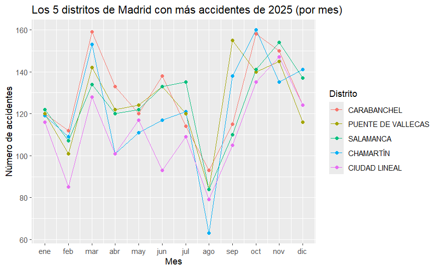
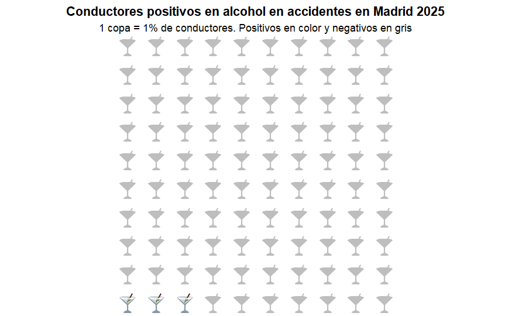
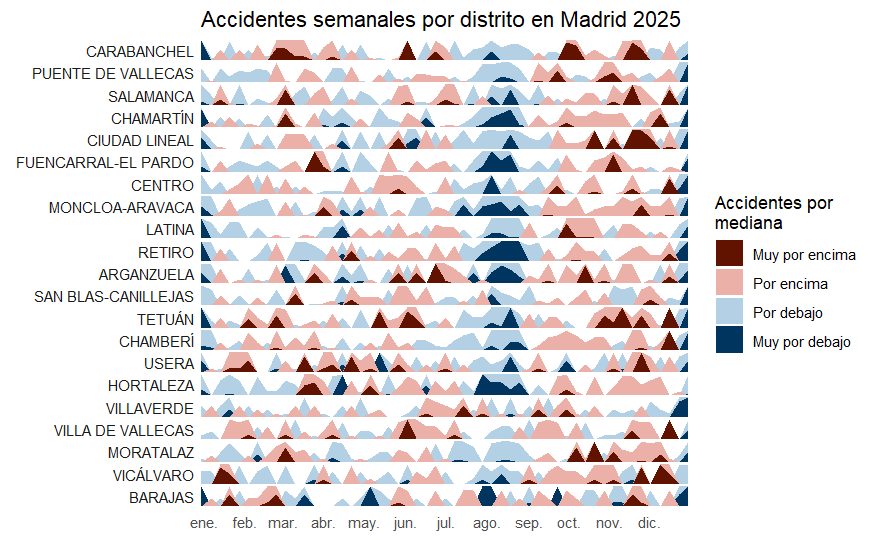

TÉCNICA GRUPO I: LINE CHART
Accidentes por mes en los 5 distritos de Madrid con mayor número de accidentes en 2025

TÉCNICA GRUPO II: WAFFLE CHART
Conductores involucrados en accidentes en Madrid (2025) que dieron positivo en alcohol

TÉCNICA GRUPO III: HORIZON GRAPH
Accidentes semanales por distritos en Madrid en 2025
